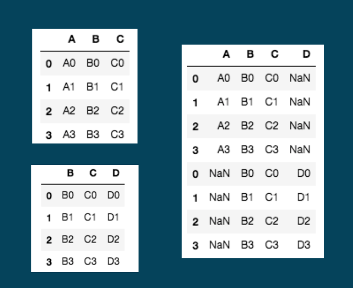
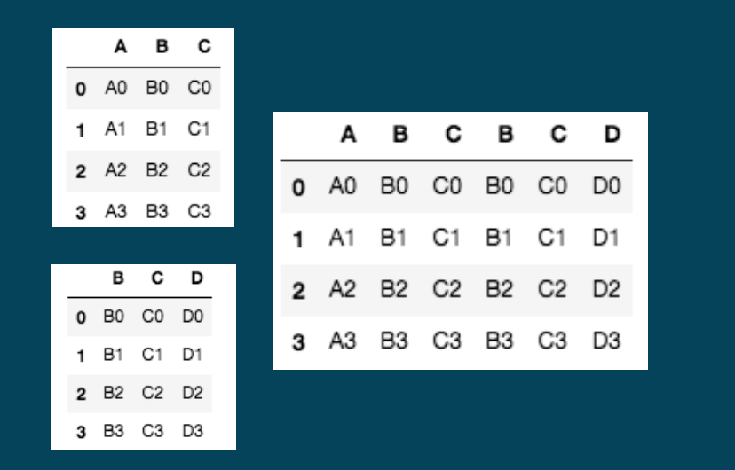
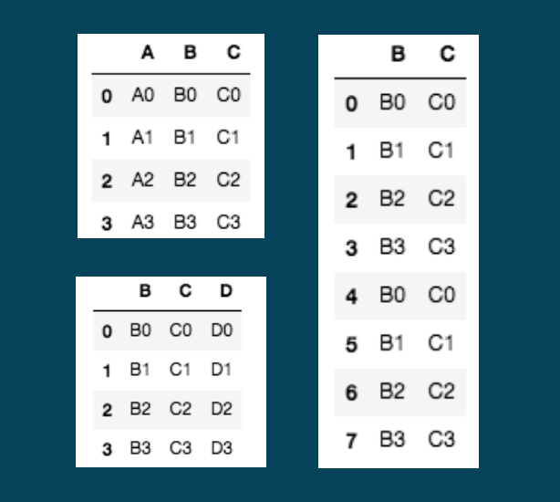
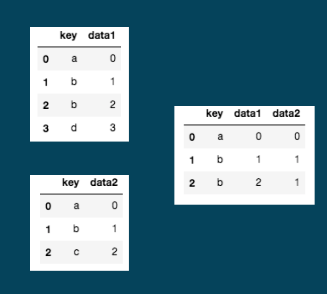
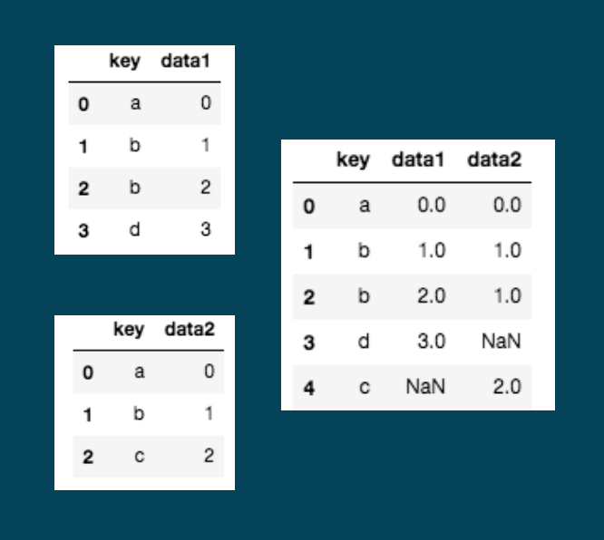
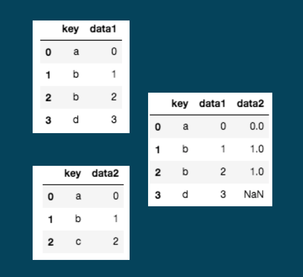
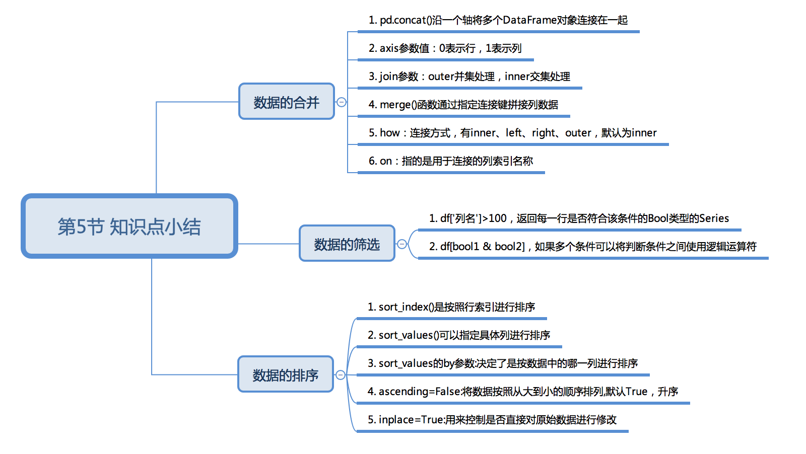

1. 数联璧合
1.1.1. 课程介绍
Hello, 我是小K，很高兴又和大家见面了，我们一起继续学习Python数据分析。
为了让你能不受干扰的在学习数据分析路上饱览胜景，请将屏幕调整成全屏，Windows系统：请按F11（或Fn+F11)；苹果系统：请同时按control+command+F。
我们经常需要将多个Excel文件，或者从多个渠道获得来的数据综合起来一起分析。本节课，我们将学习如何利用Pandas合并多个DataFrame数据，以及筛选我们心仪的数据。
1.1.2. 数据的合并
数据合并主要包括下面两种操作：
轴向连接（concatenation），
pd.concat()可以沿一个轴将多个DataFrame对象连接在一起，形成一个新的DataFrame对象融合（merging），
pd.merge()方法可以根据一个或多个键将不同DataFrame中的行连接起来
concat
concat()函数可以将数据根据不同的轴作进行合并。我们先看一下concat()的常用参数：
pd.concat(objs, axis=0, join='outer')
objs: series，dataframe或者是panel构成的序列lsit axis： 需要合并链接的轴，0是行，1是列，默认是0 join：连接的方式 inner，或者outer，默认是outer
方便同学们更好的理解，我们自己构建一些简单的数据，进行图文演示。
运行下面代码，了解数据的基本情况。
此处是代码 ————————————— —————————— 终端
import pandas as pd
dict1={
'A': ['A0', 'A1', 'A2', 'A3'],
'B': ['B0', 'B1', 'B2', 'B3'],
'C': ['C0', 'C1', 'C2', 'C3']}
df1=pd.DataFrame(dict1)
print(df1)
dict2={
'B': ['B0', 'B1', 'B2', 'B3'],
'C': ['C0', 'C1', 'C2', 'C3'],
'D': ['D0', 'D1', 'D2', 'D3']}
df2=pd.DataFrame(dict2)
print(df2)
当concat()使用默认参数合并df1和df2时,pd.concat([df1,df2],axis=0,join='outer')。

通过上面的结果可以发现，当join='outer'，axis参数为0时，列进行并集处理，纵向表拼接，缺失值由NaN填充，并且会保留原有数据的行索引。
如果两个表的index都没有实际含义，使用ignore_index参数，置true，重新整理一个新的index。
pd.concat([df1,df2],axis=0,join='outer',ignore_index=True)
当concat()的axis参数为1合并df1和df2时,pd.concat([df1,df2],axis=1,join='outer')。

当join='outer'，axis参数为1时，行进行并集处理，横向表拼接，缺失值由NaN填充。
当concat()的join参数为inner时合并df1和df2时,pd.concat([df1,df2],axis=0,join='inner')。

通过上面的结果可以看出，如果为inner得到的是两表的交集，如果是outer，得到的是两表的并集。
下面大家复制上面的代码到下面的代码框运行，验证的一下自己的理解：
此处是代码 ————————————— ——————————— 终端
merge
merge()函数通过指定连接键拼接列数据，我们先看一下merge的常用参数：
merge(left, right, how='inner', on=None)
参数介绍：
left和right：两个要合并的DataFrame
how：连接方式，有inner、left、right、outer，默认为inner
on：指的是用于连接的列索引名称，必须存在于左右两个DataFrame中，如果没有指定且其他参数也没有指定，则以两个DataFrame列名交集作为连接键
运行下面代码，了解数据的基本情况。
此处是代码 ————————————— ——————————— 终端
import pandas as pd
left = pd.DataFrame({'key':['a','b','b','d'],'data1':range(4)})
print(left)
right = pd.DataFrame({'key':['a','b','c'],'data2':range(3)})
print(right)
当merge()使用默认参数连接两个DataFrame时，pd.merge(left, right):

merge()默认做inner连接，并且使用两个DataFrame的列名交集（key）作为连接键，同样，最终连接的数据也是两个DataFramekey列数据的交集。
当两个DataFram使用做outer连接时，pd.merge(left,right,on=['key'],how='outer'):

当merge()做outer连接时最终连接的数据是两个DataFramekey列数据的并集，缺失的内容由NaN填充。
当两个DataFram使用left做连接时，pd.merge(left,right,on=['key'],how='left'):

当merge()做left连接时，最终连接的数据将以left数据的链接建为准合并两个数据的列数据，缺失的内容由NaN填充。
那么，当merge()做right连接时，最终的链接数据是什么样呢？运行下面的代码，验证你的想法：
此处是代码 ————————————— ——————————— 终端
import pandas as pd
left = pd.DataFrame({'key':['a','b','b','d'],'data1':range(4)})
right = pd.DataFrame({'key':['a','b','c'],'data2':range(3)})
result = pd.merge(left,right,on=['key'],how='right')
print(result)
上面我们了解两种合并数据的方式，接下来我们看一下他们的应用场景：
例如： 现在有两张表格分别存储了9月和10月份的成交信息，那么这个时候我们就可以使用concat( )将两个表沿着0轴合并。
例如： 现在有两张表格，一个是成交信息，包含订单号、金额、客户ID等信息；第二个是客户信息，包含客户ID、姓名、电话号等信息，那么这个时候我们就可以使用merge()根据客户ID将两个表合并成一个完整的表。
1.1.3. 数据的筛选
前面的课程中，我们学习了如何获取一条数据或者连续的多条数据，但是实际工作中我们经常需要处理上万条数据，特别是合并后的数据甚至上亿条，那么我们如何能快速筛选出符合条件的数据呢？
接下来，我们用某网站2017年用户数据为实验数据，来筛选我们想要的数据，路径为./data/mouhu_users_2017.csv。
数据详情:
_id 关注的收藏夹数量 关注数量 关注者数量（粉丝数） 关注的问题数量 关注的话题数量 关注的专栏数量
运行下面代码，了解数据的基本情况。
此处是代码 ————————————— ——————————— 终端
import pandas as pd
df = pd.read_csv('./data/mouhu_users_2017.csv')
df.head()
了解了数据的基本情况之后，第一个需求是将关注者超过100的用户数据获取出来。
我们先来看看小K的筛选逻辑，然后运行代码，验证筛选结果：
此处是代码 ————————————— ——————————— 终端
import pandas as pd
df = pd.read_csv('./data/mouhu_users_2017.csv')
bools= df['关注者']>100
df1 = df[bools]
print(df1.shape)
print(df1)
我们已经准确获取到所有关注者超过100的用户数据，下面我们看一下代码的逻辑。
bools= df['关注者']>100
首先判断每个用户的关注者数量是否大于100，大于则会返回True，表示该行被标记为True，否则被标记为False。bools记录了每一行是否符合筛选条件，是一个Series对象，其中的值是bool类型。
df1 = df[bools]
然后，根据bools每行的值来对df进行筛选，值为True，表示对应的行会留下，否则，则去除。
最后打印的df1数据就是关注者超过100的用户数据。这是pandas根据某列的值进行筛选的基本逻辑。
根据某列的值进行筛选的逻辑我们已经掌握了，如何进行多条件的联合筛选呢？
第二个需求是：获取关注者超过300并且关注的超过100的用户数据。
现在需要你抄写代码到下方的代码框，然后运行。
import pandas as pd
df = pd.read_csv('./data/mouhu_users_2017.csv')
bool1= df['关注者']>300
bool2= df['关注']>100
df2 = df[bool1 & bool2]
df2.head()
此处是代码 ————————————— ——————————— 终端
上面的这段代码里，我们通过了2个限制条件df['关注者']>300和 df['关注']>100 分别得到 bool1和bool2这2个Series。
在我们的需求中，需要的数据是同时满足两个条件，所以我们使用逻辑与运算连接两个值，最后获取同时满足两个条件的值。
1.1.4. 数据的排序
在数据获取过程中，数据的排序也是我们经常需要处理的问题。例如：我们需要找出关注者数量前十的用户信息。
可以使用sort_index()、sort_values()两个方法对数据进行排序，并且这两个方法Series和DataFrame都支持。
DataFrame的sort_index( )方法是按照行索引进行排序，sort_values()可以指定具体列进行排序。
sort_index
接下来，我们使用的世界年龄抚养比率数据为行索引排序实验数据，是否还记得这个数据呢？运行下面的代码，我们一起回顾一下这个数据：
此处是代码 ————————————— ——————————— 终端
import pandas as pd
df = pd.read_excel('./data/rate.xlsx')
print(df.shape)
print(df.head())
我们先来看一下，如何根据国家名称来进行排序，并且Country Code这一列被设置成了行索引。
此处是代码 ————————————— ——————————— 终端
import pandas as pd
df = pd.read_excel('./data/rate.xlsx',index_col='Country Code')
df.sort_index(inplace=True,ascending=True)
df.head()
通过结果发现，原来排序这么简单！接下来我们一起分析一下代码。
read_excel()中的参数index_col='Country Code'作用是在读取文件的时候指定Country Code这一列数据为行索引。
inplace=True参数和我们之前见过的作用一样，用来控制是否直接对原始数据进行修改。
ascending可以控制排序的顺序，默认值为True从小到大排列，当它被设置为False的时候就可以实现倒序排列。
现在就需要你马上动手更改上面的代码，实现数据根据索引进行倒序排列。
sort_values
现在我们来完成第一个问题，获取某乎关注者数据前十的用户数据。那么，我们就需要根据关注者这一列数据进行排序。
import pandas as pd
df = pd.read_csv('./data/mouhu_users_2017.csv')
df.sort_values(by='关注者',ascending=False,inplace=True)
print(df.head(10))
我们成功的获取了关注者数据前十的用户数据，按照惯例我们一起分析一下代码。
by:决定了是按数据中的哪一列进行排序，将需要按照某列排序的列名赋值给by即可
ascending=False:将数据按照从大到小的顺序排列
inplace=True:用来控制是否直接对原始数据进行修改
根据排序后的结果，我们发现最高的关注者数量已经达到了585787，并远远的看着第二名的356246，确有大V的潜质啊。
1.1.5. 本节总结
数据的合并、筛选和排序，是数据整理中比较重要的技能，就像将自行车变跑车，会大大提高你的工作效率，成功没有捷径，必须反复练习，勤于总结。下面我们对这节的知识点进行以下总结。

现在我正式通知您：恭喜您通过Python数据分析第5课! 第6课即将解锁，别忘了今天的课后冲浪，我们下一课再见。
1.1.6. 下节预告
1.1.7. 练习1：最长的时间是多久?
题目：最长的时间是多久?
题目要求：
现在我们有2017年度1月份和2月份的共享单车历史骑行数据，路径为./data/2017_1_data.csv和./data/2017_2_data.csv。
数据描述： Duration (ms)：骑行时间， 以毫秒为单位。
Start date：开始骑行时间
End date：结束骑行时间
Start station：开始地点
End station：结束地点
Bike number：共享单车车号
Member type：用户类别： 会员（Member/casual非会员）
将两个csv数据合并成一个数据，并按骑行时间进行倒序排列，获取最长的骑行时间。
参考答案：
import pandas as pd
df1 = pd.read_csv('./data/2017_1_data.csv')
print(df1.shape)
df2 = pd.read_csv('./data/2017_2_data.csv')
print(df2.shape)
# 合并数据
df3 = pd.concat([df1,df2])
print(df3.shape)
print(df3.head())
# 倒序排列时间
df3.sort_values(by='Duration (ms)',ascending=False,inplace=True)
print(df3.head())
# 获取最长时间
long_time = df3.iloc[0]['Duration (ms)']
print(df3.head())
print(long_time)
1.1.8. 练习2：全国人口最多的城市
题目：全国人口最多的城市
题目要求：
根据第六次全国人口普查中的常住人口数据，获取全国人口最多的10个城市。
数据信息：共包含省、地区、结尾、常住人口4个字段
难点：根据结尾字段的数据，过滤掉省，保留市
参考答案：
import pandas as pd
df = pd.read_csv('./data/liupu.csv')
# 查看数据
print(df.head())
# series.str会将每一个数据转换成字符串
# contains()判断字符串是否含有指定子串，返回的是bool类型
bools = df['结尾'].str.contains("市")
# 根据人口数倒序排列
df = df[bools].sort_values('常住人口',ascending=False)
# 获取前十个数据
print(df.head(10))